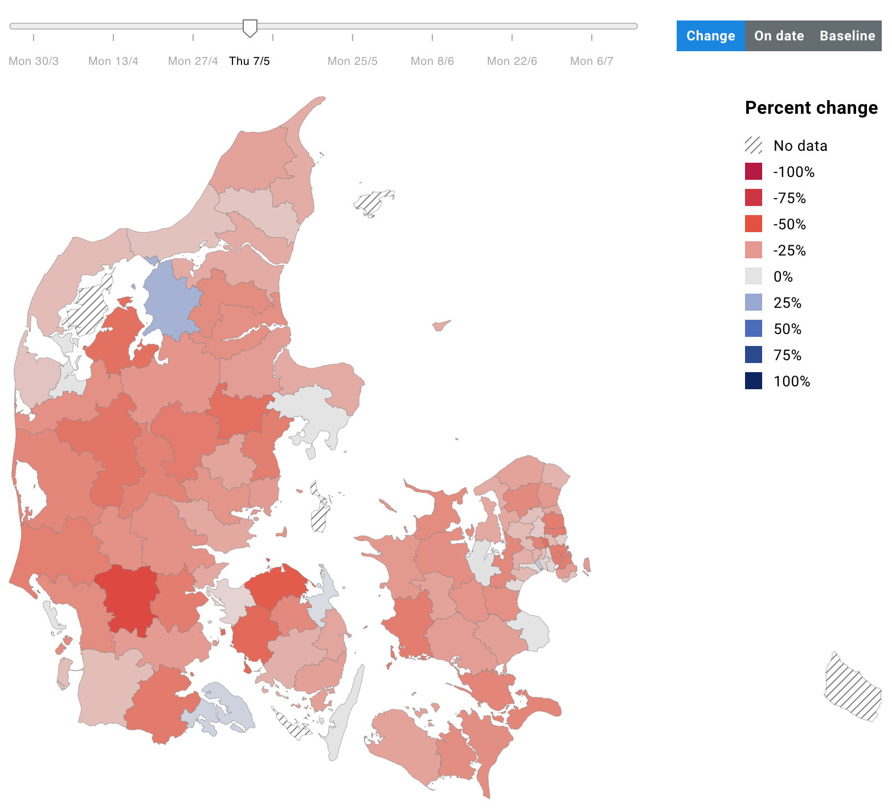

2020
When the new coronavirus swept the planet I—like so many others—felt strongly compelled to apply my craft for good. I was lucky to start a remote postdoc at DTU Compute funded by the HOPE project, and get to work less than a month after the Danish lockdown began.
In a way, this is the most straight forward thing I have ever worked on. We had access to a ton of travel data from the Facebook Data For Good initiative and some aggregated telco data for Denmark, and our goal was to build a site that visualized all of this in cool ways highlighting different aspects of mobility.

In a matter of days we had a site up and running with some useful content, and in the months that followed we expanded with eight interactive visualizations mapping various aspects of population mobility to (at the time of writing) 24 different nations. We mapped out things like commuting between regions, going out during the day, and regional population size changes—all interactivly letting the reader inspect patterns in different time windows, national regions, and more.
Cool stuff but did we make a positive difference? As a reader of O'Neill, Zuboff, Taleb and other sceptical thinkers, I am extremely impact conscious. So one thing we made sure of was not to build a survellience tool. The data is sufficiently aggregated and there is no personal data on display. And we build it indiscriminantly for the public and governments. We also didn't want to inspire any inter-regional shaming ("hey! these guys are not staying at home!"), so we made sure to clarify limitations in the data that disqualify most such comparisons.
What we effectively ended up building, then, is a public observatory for the state of world economies seen through the lense of domestic travel. We can get a pretty good idea of how much a nation is in lockdown—an indicator of the state of their economy—by asking e.g. how much their inhabitants leave home during the day. Here's Italy next to the UK:
Visibly, in terms of how much people are out and about during daytime, Italy has recovered significantly better than the UK (remember how bad they had it? they're almost back to normal!). But in the UK they are still staying home ~30% more than before the crisis. In fact, the general trend you will find when you go and interact with the data, is that countries which either imposed strict lockdowns OR mask policies have recovered best in terms of their intra-national mobility patterns. Tell that to your angry coworker complaining that the lockdown was an overreaction.
→ Make sure to check out the visualizations!
As always, this work opportunity did not come out of the blue and I did not work in a vacuum. I owe huge credit to Sune Lehmann for setting this whole thing up in no time, and to Peter Edsberg Møllgaard for scaling the website and fixing my bugs, as well as to the rest of the team (names on our website landing page). Let me also express deep gratitude towards the Carlsberg Foundation for funding our work in record breaking time.